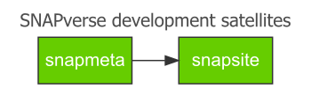

snapmeta contains a collection of utility functions for the development of other SNAPverse packages. snapmeta is a satellite package of the SNAPverse collection of R packages.

Installation
You can install snapmeta from github with:
# install.packages('devtools')
devtools::install_github("leonawicz/snapmeta")Package setup
First, take a look at the helpful reminders in the console output from reminders. It will be somewhat specific to your account and project if you pass arguments. For example, using my defaults:
library(snapmeta)
reminders()
#> 1. Create a new R package via RStudio > New Project > R Package
#> with 'Create a git repository' checked.
#> 2. Make initial commit by adding the initial .Rbuildignore, .gitignore and [pkgname].Rproj files.
#> 3. Add the repo on GitHub:
#> Use default settings (Do not create README.md).
#> Set docs/ directory for hosting project website (Must first push docs/ to GitHub).
#> 4. In git shell, enter:
#> git remote add origin git@github.com:leonawicz/snapmeta.git
#> git push -u origin master
#> 5. Then return to R console and run:
#> snapmeta::use_these()
#> NOTE: Run Rstudio session as Administator in Windows so usethese() can create lintr symbolic link.
#> 6. Add Travis CI, Appveyor and code coverage badges to README.Rmd. Add projects on respective sites.
#> Badges are in console output. Remember to add the `after_success` segment to .travis.yml as well.
#> 7. Check the following:
#> Delete absolute path to `docs` created by pkgdown in .Rbuildignore.
#> Make initial updates to DESCRIPTION and other files, e.g., README.Rmd, vignette Rmd file, LICENSE.md.
#> Delete NAMESPACE so it can be auto-generated via devtools.
#> Delete any Hello World files.
#> At least one inital unit test is required to pass build. Lintr test will suffice.
#> Commit changes, but hold off on cran-comments.md and revdep until meaningful.This should all be familiar if you develop R packages, but it can be easy to occasionally neglect a step. The recommendations are not completely universal, however, and cater specifically to SNAPverse package development.
If it meets all needs, run:
If something different is needed, ignore the above wrapper function. Instead, make individual calls to whichever package setup functions are required.
Getting info from the verse
A table of all SNAPverse packages can be obtained by:
sv_pkgs()
#> # A tibble: 25 x 3
#> pkg type local
#> <chr> <chr> <lgl>
#> 1 snapverse sector TRUE
#> 2 snaplite sector FALSE
#> 3 snapdata sector FALSE
#> 4 snapwebs sector FALSE
#> 5 snapstat functions TRUE
#> 6 snapplot functions TRUE
#> 7 snaplocs functions TRUE
#> 8 snapprep functions TRUE
#> 9 alfresco functions TRUE
#> 10 snapclim data TRUE
#> # ... with 15 more rowsThe table includes columns giving the section of the verse a package belongs to and whether or not a local git repository/R source package exists sharing the same parent directory as the current package (current working directory). A short list of the latter existing local packages can be obtained by:
sv_local_pkgs()
#> [1] "alfresco" "apputils" "jfsp" "maputils" "rvtable"
#> [6] "snapapps" "snapclim" "snapfire" "snapflex" "snapgrid"
#> [11] "snaplocs" "snapmeta" "snapplot" "snappoly" "snapprep"
#> [16] "snapsite" "snapstat" "snaputils" "snapverse"